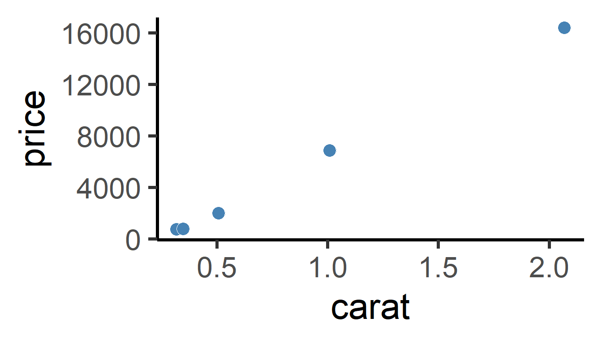
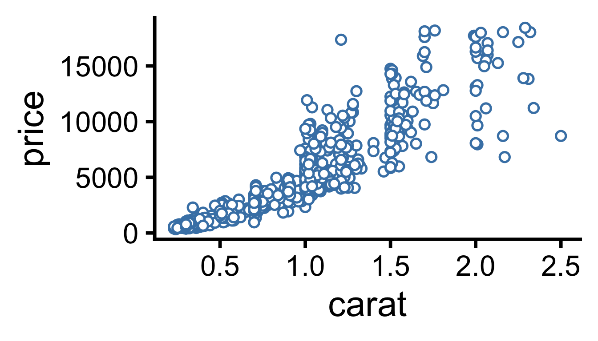
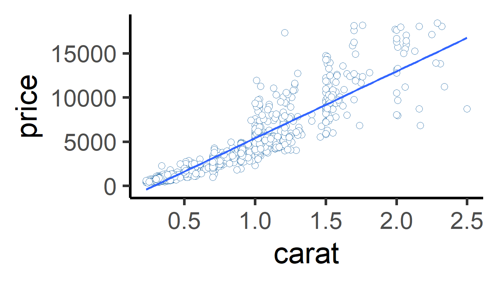
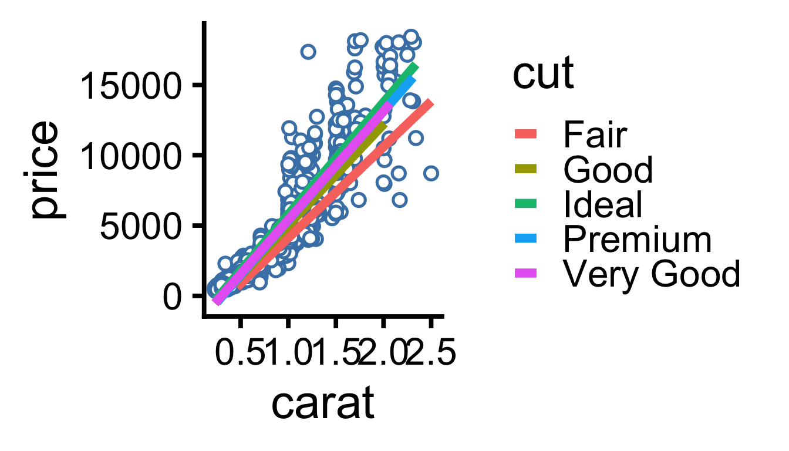
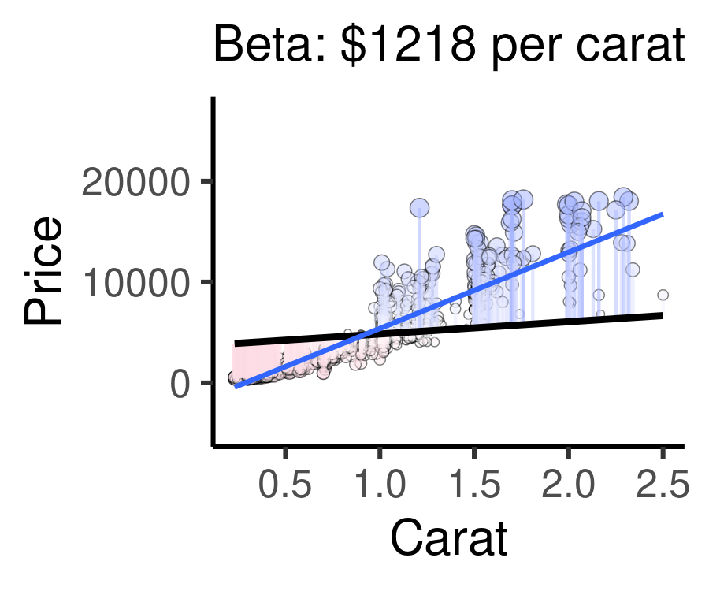
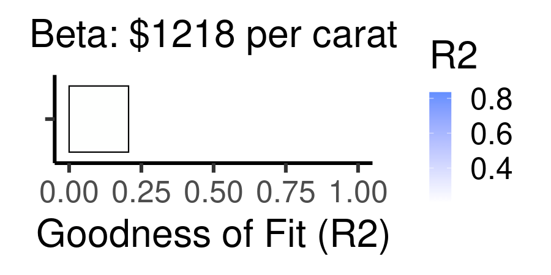

11 Workshop: Bivariate Regression: Modeling Diamond Pricing
Social systems are full of numeric variables, like voter turnout, percentage of votes for party X, income, unemployment rates, and rates of policy implementation or people affected. So how do we analyze the association between two numeric variables?
Today, we’re going to investigate a popular dataset on commerce. The ggplot2 package’s diamonds dataset contains 53,940 diamond sales gathered from the Loose Diamonds Search Engine in 2017. We’re going to examine a random sample of 1000 of these diamonds, saved as mydiamonds.csv. This dataset lets us investigate a popular question for consumers: Are diamonds’ size, measured by carat, actually related to their cost, measured by price? Let’s investigate using the techniques below.
11.1 Review
We have several tools in our toolkit for measuring the association between two variables: (1) Scatterplots, (2) Correlation, and (3) Regression / Line of Best Fit (New!). Let’s investigate!
11.1.1 Scatterplots
First, we can visualize the relationship between 2 numeric variables using a scatterplot, putting one on the x-axis and one on the y-axis. In a scatterplot, each dot represents a row in our dataset.
So, we can visualize just five randomly selected dots, like this:

Or we can visualize all the dots, like this:

We can see that there’s a strong, positive relationship. As carat increases, price increases to!
11.1.2 Correlation
We can measure the relationship between two numeric variables using Pearson’s r, the correlation coefficient! This statistic ranges from -1 to 0 to +1. -1 indicates the strongest possible negative relationship, 0 indicates no relationship, and 1 indicates the strongest possible positive relationship. That could help us learn (1) how strongly associated are they, and (2) how positive or negative is that association. The animation below shows the full range of possible correlations we might get.

11.1.5 cor.test() and tidy()
We can use cor.test() to test correlation in R. Let’s, for example, get the correlation between price and carat for each different cut of diamond. There are 5 cuts of diamonds, so we should get 5 correlations, using group_by(cut). cor.test() lets us test 3 things:
direction (positive or negative?)
strength of association (closer to +/-1 = stronger, closer to 0 = weaker)
statistical sigificance (p-value), an indicator of how extreme our statistics are - how likely is it we got this statistic due to chance? (Likely due to chance = nearer to 1; not likely due to chance = near 0, eg. p < 0.05.)
To extract cor.test()’s output, we can use the broom package’s tidy() function. This takes the output of the cor.test() function and puts it in a nice tidy data.frame, which we can then give to summarize(), allowing us to still use group_by().
Then, the correlation is reported in the estimate column, a standardized t-statistic is calculated in the statistic column, significance is given in the p.value column, and the upper (97.5%) and lower (2.5%) 95% confidence intervals are reported in conf.low and conf.high.
| cut | estimate | statistic | p.value | parameter | conf.low | conf.high | method | alternative |
|---|---|---|---|---|---|---|---|---|
| Fair | 0.854 | 10.10 | 0 | 38 | 0.739 | 0.739 | Pearson’s | two.sided |
| Good | 0.912 | 22.23 | 0 | 100 | 0.872 | 0.872 | Pearson’s | two.sided |
| Ideal | 0.919 | 45.89 | 0 | 385 | 0.903 | 0.903 | Pearson’s | two.sided |
| Premium | 0.927 | 37.21 | 0 | 228 | 0.906 | 0.906 | Pearson’s | two.sided |
| Very Good | 0.924 | 37.28 | 0 | 239 | 0.903 | 0.903 | Pearson’s | two.sided |
For correlation, most people just report the correlation coefficient, and don’t go into significance, but it’s always an option.
11.2 Regression and the Line of Best Fit
Wouldn’t it be nice if we could say, how much does the price of a diamond tend to increase when the size of that diamond increases? Economists, consumers, and aspiring fiancees could use that information to determine what size of diamond they can afford. We learned to do this in physical acceleration models, but can we apply it to large datasets?
11.2.1 Model Equation
We do this intuitively all the time, making projections based on data we’ve seen in the past. What we, and computers, are doing is building a ‘model.’ We’re taking lots of data we’ve observed and building a simplified version of it, a general trend line. It’s not intended to a complete replica - it’s just a model! This is the meaning of a regression model.
Regression models create a straight line that best approximates the shape of our data. The line of best fit is a model of the data.
The line can be represented as:
\(Y_{observed} = Alpha + X_{observed} \times Beta + Error\)
[Click Here to Review Definitions!]
Let’s break this down.
\(Y_{observed}\): the raw, observed outcome for each observation (
pricefor each diamond).\(Y_{predicted}\): the predicted outcome for each observation, based on the supplied data (`
caratfor each diamond).\(Alpha\): the predicted value of the outcome if all predictors equal zero. Also called the \(Intercept\), the point at which the line crosses the y-axis.
\(X_{Observed}\) a vector of observed values of our predictor/explanatory variable. We feed each value into our model to generate a predicted outcome.
\(Beta\): how much our outcome y (
price) increases by when our predictor/explanatory variable x (carat) increases by 1. Also known as the slope of the line.\(Error\) or \(Residuals\): predicted outcome might deviate a little from the observed outcome. This deviation (\(Y_{observed} - Y_{predicted}\)) is call the \(Residual\) for each observation. Colloquially, we call it \(Error\).
In other words, plus or minus a few \(residuals\), the \(Alpha\) (\(Intercept\)) plus the value of \(X\) times the \(Beta\) coefficient always gives you the value of \(Y\).
Learning Check 1
Question
Write out the meaning of the equation above in a sentence, replacing X, Y, ALPHA, and BETA, and UNIT OF Y below with their appropriate values and meanings. Use the format below:
If the value of X is zero, the model projects that Y equals ALPHA. As X increases by 1, Y is projected to increase by BETA, plus or minus a few UNIT OF Y.
[View Answer!]
If a diamond weighed 0 carats, the model projects that the price of that diamond would be -2161 USD. But, as the weight of that diamond increases by 1 carat, that diamond’s price is projected to increase by 7559 USD, plus or minus a few dollars.
11.3 Statistical Significance
We can even assess statistical significance for our alpha and beta coefficients. We can use tidy() from the broom package.
And if you’re not satisfied with that layout, we can write our own function tidier() to get even tidier formatting! Copy and run the tidier() function, and compare your output to tidy() above.
## # A tibble: 2 × 8
## term estimate se statistic p_value stars upper lower
## <chr> <dbl> <dbl> <dbl> <dbl> <chr> <dbl> <dbl>
## 1 (Intercept) -2161. -22.4 -22.4 0 *** -1972. -2351.
## 2 carat 7559. 71.5 71.5 0 *** 7766. 7351.A little cleaner, right? I hope this function can help you out.
| term | estimate | se | statistic | p_value | stars | upper | lower |
|---|---|---|---|---|---|---|---|
| (Intercept) | -2161.429 | -22.401 | -22.401 | 0 | *** | -1972.090 | -2350.768 |
| carat | 7558.676 | 71.527 | 71.527 | 0 | *** | 7766.047 | 7351.305 |
The table above outputs several columns of importance to us!
Click Here to See Definitions
term: the name of the intercept as well as the predictor whose beestimate: the value of the alpha coefficient (-2161) and beta coefficient (7559).statistic: a standardized ‘t-statistic’ measuring how extreme each estimate is, based on sample size and variance in our data.se: standard error for each beta coefficient, describing the standard deviation of that statistic’s sampling distribution.p_value: the probability that our alpha or beta coefficients were that large just due to chance (eg. random sampling error). Our measure of statistical significance. When 4 or more decimal places, sometimes gets abbreviated to just ‘0’ in R.stars: shorthand for significance. p < 0.001 =***; p < 0.01 =**; p < 0.05 =*; p < 0.10 =..lower: the lower bound for the range we’re 95% sure the true estimate lies in.upper: the upper bound for the range we’re 95% sure the true estimate lies in.
Learning Check 2
Question
Write out the meaning of the equation above in a sentence, replacing X, Y, ALPHA, and BETA, UNIT OF Y, and UNIT OF OBSERVATION below with their appropriate values and meanings. Use the format below:
There is a less than [0.001, 0.01, 0.05, or 0.10] probability that our alpha coefficient of ALPHA occurred due to chance. We are 95% certain that the true Y for a UNIT OF OBSERVATION that weighs 0 UNIT OF X lies between LOWER CONFIDENCE INTERVAL and UPPER CONFIDENCE INTERVAL UNIT OF Y.
There is a less than [0.001, 0.01, 0.05, or 0.10] probability that our beta coefficient of BETA occurred due to chance. We are 95% certain that as X increases by 1, the true Y for a UNIT OF OBSERVATION increases by between LOWER CONFIDENCE INTERVAL and UPPER CONFIDENCE INTERVAL UNIT OF Y.
[View Answer!]
There is a less than probability that our alpha coefficient of USD per carat occurred due to chance. We are 95% certain that the true price for a diamond that weighs 0 carats lies between and dollars.
There is a less than 0.001 probability that our beta coefficient of 7559 USD per carat occurred due to chance. We are 95% certain that as the weight of our diamond increases by 1 carat, the true price for a diamond increases by between 7351 and 7766 dollars.
Notice that the value of the intercept might be nonsensical sometimes, like a negative price.
11.4 Visualization
Finally, visualizing the line of best fit is quite easy! We make a scatterplot in using the ggplot2 package’s ggplot() function. Then, we add geom_smooth(method = "lm"). This uses the lm() function internally to make a line of best fit between our x and y variables in the aes() section of our plot.

Learning Check 3
Question
Add color = cut to the aes() in the plot above. What happens? What does this tell us about the relationship between price and carats for each cut of diamond?
[View Answer!]
ggplot generates 5 different lines of best fit, one for each level of cut. The slope of the line differs for each cut. As carats increase, price increases at a faster rate for "Ideal" cut diamonds than for "Fair" cut diamonds.

11.5 Finding the Line of Best Fit
We know that lm() finds the line of best fit, but how exactly does it do it? It all has to do with predicted values, residuals, and R-squared.
11.5.1 Predicted Values
All models have a lot of information stored inside them, which you can access using the $ sign. (Note: select() can’t extract them, because model objects are not data.frames)
| price | carat |
|---|---|
| 4596 | 1.20 |
| 1934 | 0.62 |
| 4840 | 1.14 |
This code gives you the the predicted values for your outcome, dubbed price_hat (\(Y_{Predicted}\)), and your residuals (\(Y_{Observed} − Y_{Predicted}\)), given each row of data.
## # A tibble: 3 × 4
## price carat price_hat residual
## <dbl> <dbl> <dbl> <dbl>
## 1 4596 1.2 6909. -2313.
## 2 1934 0.62 2525. -591.
## 3 4840 1.14 6455. -1615.
11.5.2 Residuals
Residuals represent the difference between the observed outcome and the outcome predicted by the model. A regression model finds the line which minimizes these residuals, thus getting the best “model” for the overall trend in the data.
The animation below below visualizes residuals as lines stemming from the best fit line. The alpha and beta coefficients are varied to show changing residuals for each of these different lines, compared to the blue line, which is the actual line of best fit.
Cases well predicted by the model are tiny, and close to the best fit line.
Cases poorly predicted by the model are BIG, and far from the best fit line.

Extra: code this as a static visual! (optional)
11.5.3 R-squared
R-squared (\(R^{2}\)) is a simple statistic that ranges from 0 - 1. R2 measures the percentage of variation in the outcome that is explained by the model.
Benchmarks for \(R^{2}\)
\(R^{2}\) = 1.00 -> perfect fit. All variation perfectly explained.
\(R^{2}\) = 0.85 -> pretty great fit; 85% of variation in outcome explained!
\(R^{2}\) = 0.5 -> pretty good; 50% explained!
\(R^{2}\) = 0.2 -> not good, but 20% explained is better than nothing!
\(R^{2}\) = 0 -> nothing. Just nothing.
Calculating \(R^{2}\)
We calculate \(R^{2}\) using this formula:
\(R^{2}\) = 1 - (Residual Sum of Squares / Total Sum of Squares)
Total Sum of Squares (TSS): the sum of the squared differences between observed outcomes and their overall mean outcome. A single number describing how much the outcome varies.
sum( (y - mean(y))^2 )Residual Sum of Squares (RSS): describes on average the difference between observed outcomes and predicted outcomes. A single number describing how much the model errs from the real data.
sum( (y - ypredicted)^2 )
We can combine these to understand our model:
RSS / TSS: percentage of variation that remains unexplained by the model.
1 - (RSS / TSS): percentage of variation that was explained by the model.
\(R^{2}\): percentage of variation in the outcome that was explained by the model.
We can manually code this in R2!
| tss | rss | R2 |
|---|---|---|
| 14222520095 | 2321500034 | 0.8367729 |
For example, the following animation shows how each of the possible lines plotted above produces a different residual sum of squares, leading to a different \(R^{2}\). The sweet spot, where \(R^{2}\) is highest (and therefore the residuals are minimized) is when the slope is closest to our actual observed beta value, $7559 per carat. Otherwise, both higher and lower slopes lead to a lower \(R^{2}\).

Learning Check 4
Question
How much of the variation in the outcome did the model explain? What statistic tells us this information? Does this mean our model fits well or poorly?
[View Answer!]
This model explained 84% of the variation in the outcome. The \(R^{2}\) statistic tells us this information. A higher \(R^{2}\) statistic means better model fit, and 0.84 is quite close to 1.00, the max possible model fit.
11.6 F-statistic
Finally, we also want to measure how useful this model is, compared to the intercept.
11.6.1 Interpreting an F-statistic
Models are imperfect approximations of trends in data. The simplest possible model of data is the intercept line, the amount of the outcome you would have if X were zero. (Imagine a flat line through your data at the intercept.) If we have a good model, it had better explain more variation than the amount explained by the intercept line, right? To do this, we can calculate an F-statistic for our model.
F statistics (just like Chi-squared) range from 0 to infinity.
If your F statistic is small, the model ain’t much better than the intercept.
If your F statistic is large, the model explains much, much more variation than the intercept.
We can compare your F statistic to a null distribution of scores we’d get due to chance, and find the probability we got this statistic due to chance, our p-value. The
broompackage’sglance()function lets us do this below, giving us astatisticandp.value.
| r.squared | adj.r.squared | sigma | statistic | p.value | df | logLik | AIC | BIC | deviance | df.residual | nobs |
|---|---|---|---|---|---|---|---|---|---|---|---|
| 0.8367729 | 0.8366094 | 1525.173 | 5116.183 | 0 | 1 | -8747.801 | 17501.6 | 17516.32 | 2321500034 | 998 | 1000 |
The F statistic requires five main ingredients:
The residual sum of squares (variation NOT explained by the model)
The total sum of squares (all variation IN the data)
The explained sum of squares (variation EXPLAINED by the model), which is the difference between the total and residual sum of squares.
The sample size (number of diamonds analyzed)
Number of variables in the model (outcome + predictor = 2)
## Rows: 1
## Columns: 5
## $ residual_sum_of_squares <dbl> 2321500034
## $ total_sum_of_squares <dbl> 14222520095
## $ n <int> 1000
## $ p <int> 2
## $ explained_sum_of_squares <dbl> 11901020061What do we do with our ingredients to make the F-statistic then? We need to calculate on average, how much variation was explained, relative to the number of predictors, compared to on average, how much error was not explained, relative to the number of cases analyzed and variables used.
## Rows: 1
## Columns: 9
## $ residual_sum_of_squares <dbl> 2321500034
## $ total_sum_of_squares <dbl> 14222520095
## $ n <int> 1000
## $ p <int> 2
## $ explained_sum_of_squares <dbl> 11901020061
## $ mean_squares_due_to_regression <dbl> 11901020061
## $ mean_squared_error <dbl> 2326152
## $ f_statistic <dbl> 5116.183
## $ p_value <dbl> 0And there you have it! That’s how you calculate an F-statistic and its p-value manually. As you can see, it’s a lot faster to just use the broom package’s glance() function.
11.7 summary()
We learned in this workshop that every regression model generates several statistics: (1) intercept (alpha coefficient), (2) beta coefficient(s), (3) \(R^{2}\), and (4) F-statistic.
11.7.1 Get all stats, all at once with summary()
Wouldn’t it be handy if there were a convenient function that let us see all of this in one place? Try the summary() function. It can be overwhelming - it outputs lots of information. However, we only need to look in 4 places for key information.
##
## Call:
## lm(formula = price ~ carat, data = .)
##
## Residuals:
## Min 1Q Median 3Q Max
## -8024.3 -760.3 -11.9 527.1 10368.4
##
## Coefficients:
## Estimate Std. Error t value Pr(>|t|)
## (Intercept) -2161.43 96.49 -22.40 <2e-16 ***
## carat 7558.68 105.68 71.53 <2e-16 ***
## ---
## Signif. codes: 0 '***' 0.001 '**' 0.01 '*' 0.05 '.' 0.1 ' ' 1
##
## Residual standard error: 1525 on 998 degrees of freedom
## Multiple R-squared: 0.8368, Adjusted R-squared: 0.8366
## F-statistic: 5116 on 1 and 998 DF, p-value: < 2.2e-16
11.7.2 4 Key Statistics
So what can you find in the summary() output?
coefficients: Under Coefficients, we can see the intercept and predictor(s) in our model. Each row shows the name of a term in our model (eg. carat) and an Estimate. This is the Beta Coefficient, or in the case of the Intercept, the Alpha Coefficient.
p-value: Then, at the end of each row is something called “Pr(>|t|)”. This is the weirdest way I’ve ever seen it written, but in simple terms: it’s the p-value for the Alpha or Beta coefficient. Nothing else in the table matters much.
R2: Below the coefficient table are the model information. You’ll notice R-squared: ~0.84. This is where you can find R2 calculated for you.
F-statistic: Beneath that is the F-statistic, 5116. At the end of the row is the p-value of the F-statistic, the more readable statistic.
Learning Check 5
Question
Using the filter() and lm() functions, test the effect of carat on diamond price, first looking at just "Ideal" diamonds. Use the summary() function, and report alpha, beta, R2, the F-statistic, and its p-value for this model.
[View Answer!]
##
## Call:
## lm(formula = price ~ carat, data = .)
##
## Residuals:
## Min 1Q Median 3Q Max
## -6325.2 -728.3 -12.4 480.1 9892.0
##
## Coefficients:
## Estimate Std. Error t value Pr(>|t|)
## (Intercept) -2184.9 141.3 -15.47 <2e-16 ***
## carat 7971.8 173.7 45.89 <2e-16 ***
## ---
## Signif. codes: 0 '***' 0.001 '**' 0.01 '*' 0.05 '.' 0.1 ' ' 1
##
## Residual standard error: 1458 on 385 degrees of freedom
## Multiple R-squared: 0.8454, Adjusted R-squared: 0.845
## F-statistic: 2106 on 1 and 385 DF, p-value: < 2.2e-16For ideal diamonds, the model projected that a diamond weighing 0 carats would cost -2185 USD, increasing by 7972 for every additional carat. Both coefficients were statistically significant at the p < 0.001 level.
The model explained 85% of the variation in ideal-cut diamond prices, and fit much better than the intercept, shown by our statistically significant f-statistic (F = 2106, p < 0.001).